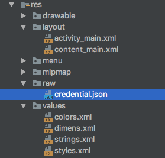
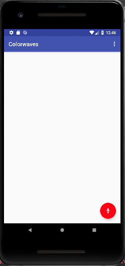
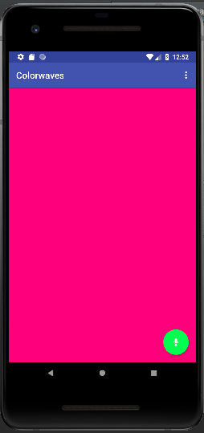

We're going to make an app called "Colorwaves". It will let you control the color of your screen purely from your voice.
Prerequisites:
If you do not have the starter code android files, please follow the steps to make the base application. If you have the code, import it as a project in Android Studio and feel free to move to the next section.
Step 1: Make a new project called Colorwaves
Step 2: Select Basic Activity
Step 3: Make a class called GoogleCredentialsInterceptor using the code below:
import com.google.auth.Credentials;
import java.io.IOException;
import java.net.URI;
import java.net.URISyntaxException;
import java.util.List;
import java.util.Map;
import io.grpc.CallOptions;
import io.grpc.Channel;
import io.grpc.ClientCall;
import io.grpc.ClientInterceptor;
import io.grpc.ClientInterceptors;
import io.grpc.Metadata;
import io.grpc.MethodDescriptor;
import io.grpc.Status;
import io.grpc.StatusException;
public class GoogleCredentialsInterceptor implements ClientInterceptor {
private final Credentials mCredentials;
private Metadata mCached;
private Map<String, List<String>> mLastMetadata;
GoogleCredentialsInterceptor(Credentials credentials) {
mCredentials = credentials;
}
@Override
public <ReqT, RespT> ClientCall<ReqT, RespT> interceptCall(final MethodDescriptor<ReqT, RespT> method, CallOptions callOptions, final Channel next) {
return new ClientInterceptors.CheckedForwardingClientCall<ReqT, RespT>(
next.newCall(method, callOptions)) {
@Override
protected void checkedStart(Listener<RespT> responseListener, Metadata headers)
throws StatusException {
Metadata cachedSaved;
URI uri = serviceUri(next, method);
synchronized (this) {
Map<String, List<String>> latestMetadata = getRequestMetadata(uri);
if (mLastMetadata == null || mLastMetadata != latestMetadata) {
mLastMetadata = latestMetadata;
mCached = toHeaders(mLastMetadata);
}
cachedSaved = mCached;
}
headers.merge(cachedSaved);
delegate().start(responseListener, headers);
}
};
}
/**
* Generate a JWT-specific service URI. The URI is simply an identifier with enough
* information for a service to know that the JWT was intended for it. The URI will
* commonly be verified with a simple string equality check.
*/
private URI serviceUri(Channel channel, MethodDescriptor<?, ?> method)
throws StatusException {
String authority = channel.authority();
if (authority == null) {
throw Status.UNAUTHENTICATED
.withDescription("Channel has no authority")
.asException();
}
// Always use HTTPS, by definition.
final String scheme = "https";
final int defaultPort = 443;
String path = "/" + MethodDescriptor.extractFullServiceName(method.getFullMethodName());
URI uri;
try {
uri = new URI(scheme, authority, path, null, null);
} catch (URISyntaxException e) {
throw Status.UNAUTHENTICATED
.withDescription("Unable to construct service URI for auth")
.withCause(e).asException();
}
// The default port must not be present. Alternative ports should be present.
if (uri.getPort() == defaultPort) {
uri = removePort(uri);
}
return uri;
}
private URI removePort(URI uri) throws StatusException {
try {
return new URI(uri.getScheme(), uri.getUserInfo(), uri.getHost(), -1 /* port */,
uri.getPath(), uri.getQuery(), uri.getFragment());
} catch (URISyntaxException e) {
throw Status.UNAUTHENTICATED
.withDescription("Unable to construct service URI after removing port")
.withCause(e).asException();
}
}
private Map<String, List<String>> getRequestMetadata(URI uri) throws StatusException {
try {
return mCredentials.getRequestMetadata(uri);
} catch (IOException e) {
throw Status.UNAUTHENTICATED.withCause(e).asException();
}
}
private static Metadata toHeaders(Map<String, List<String>> metadata) {
Metadata headers = new Metadata();
if (metadata != null) {
for (String key : metadata.keySet()) {
Metadata.Key<String> headerKey = Metadata.Key.of(
key, Metadata.ASCII_STRING_MARSHALLER);
for (String value : metadata.get(key)) {
headers.put(headerKey, value);
}
}
}
return headers;
}
}
Step 4: Make a class called VoiceRecorder. The code can be found below.
/*
* Copyright 2016 Google Inc. All Rights Reserved.
*
* Licensed under the Apache License, Version 2.0 (the "License");
* you may not use this file except in compliance with the License.
* You may obtain a copy of the License at
*
* http://www.apache.org/licenses/LICENSE-2.0
*
* Unless required by applicable law or agreed to in writing, software
* distributed under the License is distributed on an "AS IS" BASIS,
* WITHOUT WARRANTIES OR CONDITIONS OF ANY KIND, either express or implied.
* See the License for the specific language governing permissions and
* limitations under the License.
*/
import android.media.AudioFormat;
import android.media.AudioRecord;
import android.media.MediaRecorder;
import android.support.annotation.NonNull;
/**
* Continuously records audio and notifies the {@link VoiceRecorder.Callback} when voice (or any
* sound) is heard.
*
* <p>The recorded audio format is always {@link AudioFormat#ENCODING_PCM_16BIT} and
* {@link AudioFormat#CHANNEL_IN_MONO}. This class will automatically pick the right sample rate
* for the device. Use {@link #getSampleRate()} to get the selected value.</p>
*/
public class VoiceRecorder {
private static final int[] SAMPLE_RATE_CANDIDATES = new int[]{16000, 11025, 22050, 44100};
private static final int CHANNEL = AudioFormat.CHANNEL_IN_MONO;
private static final int ENCODING = AudioFormat.ENCODING_PCM_16BIT;
private static final int AMPLITUDE_THRESHOLD = 1500;
private static final int SPEECH_TIMEOUT_MILLIS = 2000;
private static final int MAX_SPEECH_LENGTH_MILLIS = 30 * 1000;
public static abstract class Callback {
/**
* Called when the recorder starts hearing voice.
*/
public void onVoiceStart() {
}
/**
* Called when the recorder is hearing voice.
*
* @param data The audio data in {@link AudioFormat#ENCODING_PCM_16BIT}.
* @param size The size of the actual data in {@code data}.
*/
public void onVoice(byte[] data, int size) {
}
/**
* Called when the recorder stops hearing voice.
*/
public void onVoiceEnd() {
}
}
private final Callback mCallback;
private AudioRecord mAudioRecord;
private Thread mThread;
private byte[] mBuffer;
private final Object mLock = new Object();
/** The timestamp of the last time that voice is heard. */
private long mLastVoiceHeardMillis = Long.MAX_VALUE;
/** The timestamp when the current voice is started. */
private long mVoiceStartedMillis;
public VoiceRecorder(@NonNull Callback callback) {
mCallback = callback;
}
/**
* Starts recording audio.
*
* <p>The caller is responsible for calling {@link #stop()} later.</p>
*/
public void start() {
// Stop recording if it is currently ongoing.
stop();
// Try to create a new recording session.
mAudioRecord = createAudioRecord();
if (mAudioRecord == null) {
throw new RuntimeException("Cannot instantiate VoiceRecorder");
}
// Start recording.
mAudioRecord.startRecording();
// Start processing the captured audio.
mThread = new Thread(new ProcessVoice());
mThread.start();
}
/**
* Stops recording audio.
*/
public void stop() {
synchronized (mLock) {
dismiss();
if (mThread != null) {
mThread.interrupt();
mThread = null;
}
if (mAudioRecord != null) {
mAudioRecord.stop();
mAudioRecord.release();
mAudioRecord = null;
}
mBuffer = null;
}
}
/**
* Dismisses the currently ongoing utterance.
*/
public void dismiss() {
if (mLastVoiceHeardMillis != Long.MAX_VALUE) {
mLastVoiceHeardMillis = Long.MAX_VALUE;
mCallback.onVoiceEnd();
}
}
/**
* Retrieves the sample rate currently used to record audio.
*
* @return The sample rate of recorded audio.
*/
public int getSampleRate() {
if (mAudioRecord != null) {
return mAudioRecord.getSampleRate();
}
return 0;
}
/**
* Creates a new {@link AudioRecord}.
*
* @return A newly created {@link AudioRecord}, or null if it cannot be created (missing
* permissions?).
*/
private AudioRecord createAudioRecord() {
for (int sampleRate : SAMPLE_RATE_CANDIDATES) {
final int sizeInBytes = AudioRecord.getMinBufferSize(sampleRate, CHANNEL, ENCODING);
if (sizeInBytes == AudioRecord.ERROR_BAD_VALUE) {
continue;
}
final AudioRecord audioRecord = new AudioRecord(MediaRecorder.AudioSource.MIC,
sampleRate, CHANNEL, ENCODING, sizeInBytes);
if (audioRecord.getState() == AudioRecord.STATE_INITIALIZED) {
mBuffer = new byte[sizeInBytes];
return audioRecord;
} else {
audioRecord.release();
}
}
return null;
}
/**
* Continuously processes the captured audio and notifies {@link #mCallback} of corresponding
* events.
*/
private class ProcessVoice implements Runnable {
@Override
public void run() {
while (true) {
synchronized (mLock) {
if (Thread.currentThread().isInterrupted()) {
break;
}
final int size = mAudioRecord.read(mBuffer, 0, mBuffer.length);
final long now = System.currentTimeMillis();
if (isHearingVoice(mBuffer, size)) {
if (mLastVoiceHeardMillis == Long.MAX_VALUE) {
mVoiceStartedMillis = now;
mCallback.onVoiceStart();
}
mCallback.onVoice(mBuffer, size);
mLastVoiceHeardMillis = now;
if (now - mVoiceStartedMillis > MAX_SPEECH_LENGTH_MILLIS) {
end();
}
} else if (mLastVoiceHeardMillis != Long.MAX_VALUE) {
mCallback.onVoice(mBuffer, size);
if (now - mLastVoiceHeardMillis > SPEECH_TIMEOUT_MILLIS) {
end();
}
}
}
}
}
private void end() {
mLastVoiceHeardMillis = Long.MAX_VALUE;
mCallback.onVoiceEnd();
}
private boolean isHearingVoice(byte[] buffer, int size) {
for (int i = 0; i < size - 1; i += 2) {
// The buffer has LINEAR16 in little endian.
int s = buffer[i + 1];
if (s < 0) s *= -1;
s <<= 8;
s += Math.abs(buffer[i]);
if (s > AMPLITUDE_THRESHOLD) {
return true;
}
}
return false;
}
}
}
Step 5: Make a class called SpeechAPI. The code can be found below.
import android.content.Context;
import android.content.SharedPreferences;
import android.os.AsyncTask;
import android.os.Handler;
import android.support.annotation.NonNull;
import android.util.Log;
import com.google.auth.oauth2.AccessToken;
import com.google.auth.oauth2.GoogleCredentials;
import com.google.cloud.speech.v1.RecognitionConfig;
import com.google.cloud.speech.v1.SpeechGrpc;
import com.google.cloud.speech.v1.SpeechRecognitionAlternative;
import com.google.cloud.speech.v1.StreamingRecognitionConfig;
import com.google.cloud.speech.v1.StreamingRecognitionResult;
import com.google.cloud.speech.v1.StreamingRecognizeRequest;
import com.google.cloud.speech.v1.StreamingRecognizeResponse;
import com.google.protobuf.ByteString;
import java.io.IOException;
import java.io.InputStream;
import java.util.ArrayList;
import java.util.Collections;
import java.util.Date;
import java.util.List;
import java.util.concurrent.TimeUnit;
import io.grpc.ManagedChannel;
import io.grpc.internal.DnsNameResolverProvider;
import io.grpc.okhttp.OkHttpChannelProvider;
import io.grpc.stub.StreamObserver;
public class SpeechAPI {
public static final List<String> SCOPE = Collections.singletonList("https://www.googleapis.com/auth/cloud-platform");
public static final String TAG = "SpeechAPI";
private static final String PREFS = "SpeechService";
private static final String PREF_ACCESS_TOKEN_VALUE = "access_token_value";
private static final String PREF_ACCESS_TOKEN_EXPIRATION_TIME = "access_token_expiration_time";
/**
* We reuse an access token if its expiration time is longer than this.
*/
private static final int ACCESS_TOKEN_EXPIRATION_TOLERANCE = 30 * 60 * 1000; // thirty minutes
/**
* We refresh the current access token before it expires.
*/
private static final int ACCESS_TOKEN_FETCH_MARGIN = 60 * 1000; // one minute
private static final String HOSTNAME = "speech.googleapis.com";
private static final int PORT = 443;
private static Handler mHandler;
private final ArrayList<Listener> mListeners = new ArrayList<>();
private final StreamObserver<StreamingRecognizeResponse> mResponseObserver = new StreamObserver<StreamingRecognizeResponse>() {
@Override
public void onNext(StreamingRecognizeResponse response) {
String text = null;
boolean isFinal = false;
if (response.getResultsCount() > 0) {
final StreamingRecognitionResult result = response.getResults(0);
isFinal = result.getIsFinal();
if (result.getAlternativesCount() > 0) {
final SpeechRecognitionAlternative alternative = result.getAlternatives(0);
text = alternative.getTranscript();
}
}
if (text != null) {
for (Listener listener : mListeners) {
listener.onSpeechRecognized(text, isFinal);
}
}
}
@Override
public void onError(Throwable t) {
Log.e(TAG, "Error calling the API.", t);
}
@Override
public void onCompleted() {
Log.i(TAG, "API completed.");
}
};
private Context mContext;
private volatile AccessTokenTask mAccessTokenTask;
private final Runnable mFetchAccessTokenRunnable = new Runnable() {
@Override
public void run() {
fetchAccessToken();
}
};
private SpeechGrpc.SpeechStub mApi;
private StreamObserver<StreamingRecognizeRequest> mRequestObserver;
public SpeechAPI(Context mContext) {
this.mContext = mContext;
mHandler = new Handler();
fetchAccessToken();
}
public void destroy() {
mHandler.removeCallbacks(mFetchAccessTokenRunnable);
mHandler = null;
// Release the gRPC channel.
if (mApi != null) {
final ManagedChannel channel = (ManagedChannel) mApi.getChannel();
if (channel != null && !channel.isShutdown()) {
try {
channel.shutdown().awaitTermination(5, TimeUnit.SECONDS);
} catch (InterruptedException e) {
Log.e(TAG, "Error shutting down the gRPC channel.", e);
}
}
mApi = null;
}
}
private void fetchAccessToken() {
if (mAccessTokenTask != null) {
return;
}
mAccessTokenTask = new AccessTokenTask();
mAccessTokenTask.execute();
}
public void addListener(@NonNull Listener listener) {
mListeners.add(listener);
}
public void removeListener(@NonNull Listener listener) {
mListeners.remove(listener);
}
/**
* Starts recognizing speech audio.
*
* @param sampleRate The sample rate of the audio.
*/
public void startRecognizing(int sampleRate) {
if (mApi == null) {
Log.w(TAG, "API not ready. Ignoring the request.");
return;
}
// Configure the API
mRequestObserver = mApi.streamingRecognize(mResponseObserver);
StreamingRecognitionConfig streamingConfig = StreamingRecognitionConfig.newBuilder()
.setConfig(RecognitionConfig.newBuilder()
.setLanguageCode("en-US")
.setEncoding(RecognitionConfig.AudioEncoding.LINEAR16)
.setSampleRateHertz(sampleRate)
.build()
)
.setInterimResults(true)
.setSingleUtterance(true)
.build();
StreamingRecognizeRequest streamingRecognizeRequest = StreamingRecognizeRequest.newBuilder().setStreamingConfig(streamingConfig).build();
mRequestObserver.onNext(streamingRecognizeRequest);
}
/**
* Recognizes the speech audio. This method should be called every time a chunk of byte buffer
* is ready.
*
* @param data The audio data.
* @param size The number of elements that are actually relevant in the {@code data}.
*/
public void recognize(byte[] data, int size) {
if (mRequestObserver == null) {
return;
}
// Call the streaming recognition API
mRequestObserver.onNext(StreamingRecognizeRequest.newBuilder()
.setAudioContent(ByteString.copyFrom(data, 0, size))
.build());
}
/**
* Finishes recognizing speech audio.
*/
public void finishRecognizing() {
if (mRequestObserver == null) {
return;
}
mRequestObserver.onCompleted();
mRequestObserver = null;
}
public interface Listener {
//Called when a new piece of text was recognized by the Speech API.
void onSpeechRecognized(String text, boolean isFinal);
}
private class AccessTokenTask extends AsyncTask<Void, Void, AccessToken> {
@Override
protected AccessToken doInBackground(Void... voids) {
final SharedPreferences prefs = mContext.getSharedPreferences(PREFS, Context.MODE_PRIVATE);
String tokenValue = prefs.getString(PREF_ACCESS_TOKEN_VALUE, null);
long expirationTime = prefs.getLong(PREF_ACCESS_TOKEN_EXPIRATION_TIME, -1);
// Check if the current token is still valid for a while
if (tokenValue != null && expirationTime > 0) {
if (expirationTime > System.currentTimeMillis() + ACCESS_TOKEN_EXPIRATION_TOLERANCE) {
return new AccessToken(tokenValue, new Date(expirationTime));
}
}
final InputStream stream = mContext.getResources().openRawResource(R.raw.credential);
try {
final GoogleCredentials credentials = GoogleCredentials.fromStream(stream).createScoped(SCOPE);
final AccessToken token = credentials.refreshAccessToken();
prefs.edit()
.putString(PREF_ACCESS_TOKEN_VALUE, token.getTokenValue())
.putLong(PREF_ACCESS_TOKEN_EXPIRATION_TIME, token.getExpirationTime().getTime())
.apply();
return token;
} catch (IOException e) {
Log.e(TAG, "Failed to obtain access token.", e);
}
return null;
}
@Override
protected void onPostExecute(AccessToken accessToken) {
mAccessTokenTask = null;
final ManagedChannel channel = new OkHttpChannelProvider()
.builderForAddress(HOSTNAME, PORT)
.nameResolverFactory(new DnsNameResolverProvider())
.intercept(new GoogleCredentialsInterceptor(new GoogleCredentials(accessToken)
.createScoped(SCOPE)))
.build();
mApi = SpeechGrpc.newStub(channel);
// Schedule access token refresh before it expires
if (mHandler != null) {
mHandler.postDelayed(mFetchAccessTokenRunnable,
Math.max(accessToken.getExpirationTime().getTime() - System.currentTimeMillis() - ACCESS_TOKEN_FETCH_MARGIN, ACCESS_TOKEN_EXPIRATION_TOLERANCE));
}
}
}
}
Step 6: Update the Project Gradle using the code below:
// Top-level build file where you can add configuration options common to all sub-projects/modules.
buildscript {
repositories {
jcenter()
maven {
url 'https://maven.google.com/'
name 'Google'
}
}
dependencies {
classpath 'com.android.tools.build:gradle:2.3.3'
classpath 'com.google.protobuf:protobuf-gradle-plugin:0.8.0'
// NOTE: Do not place your application dependencies here; they belong
// in the individual module build.gradle files
}
}
allprojects {
repositories {
jcenter()
maven {
url 'https://maven.google.com/'
name 'Google'
}
}
}
task clean(type: Delete) {
delete rootProject.buildDir
}
Step 7: Update the App Gradle using the code below:
apply plugin: 'com.android.application'
apply plugin: 'com.google.protobuf'
ext {
grpcVersion = '1.4.0'
}
android {
compileSdkVersion 26
buildToolsVersion "26.0.0"
defaultConfig {
applicationId "[YOUR APPLICATION ID]"
minSdkVersion 21
targetSdkVersion 26
versionCode 1
versionName "1.0"
testInstrumentationRunner "android.support.test.runner.AndroidJUnitRunner"
multiDexEnabled true
}
buildTypes {
release {
minifyEnabled false
proguardFiles getDefaultProguardFile('proguard-android.txt'), 'proguard-rules.pro'
}
}
configurations.all {
resolutionStrategy.force 'com.google.code.findbugs:jsr305:3.0.2'
}
}
protobuf {
protoc {
artifact = 'com.google.protobuf:protoc:3.3.0'
}
plugins {
javalite {
artifact = "com.google.protobuf:protoc-gen-javalite:3.0.0"
}
grpc {
artifact = "io.grpc:protoc-gen-grpc-java:${grpcVersion}"
}
}
generateProtoTasks {
all().each { task ->
task.plugins {
javalite {}
grpc {
// Options added to --grpc_out
option 'lite'
}
}
}
}
}
dependencies {
compile fileTree(dir: 'libs', include: ['*.jar'])
androidTestCompile('com.android.support.test.espresso:espresso-core:2.2.2', {
exclude group: 'com.android.support', module: 'support-annotations'
})
compile 'com.android.support:appcompat-v7:26.1.0'
compile 'com.android.support.constraint:constraint-layout:1.0.2'
testCompile 'junit:junit:4.12'
compile 'com.jakewharton:butterknife:8.7.0'
annotationProcessor 'com.jakewharton:butterknife-compiler:8.7.0'
compile 'com.android.support:design:26.1.0'
// gRPC
compile "io.grpc:grpc-okhttp:$grpcVersion"
compile "io.grpc:grpc-protobuf-lite:$grpcVersion"
compile "io.grpc:grpc-stub:$grpcVersion"
compile 'javax.annotation:javax.annotation-api:1.2'
protobuf 'com.google.protobuf:protobuf-java:3.3.1'
compile group: 'com.google.api.grpc', name: 'grpc-google-cloud-speech-v1', version: '0.1.13'
// OAuth2 for Google API
compile('com.google.auth:google-auth-library-oauth2-http:0.7.0') {
exclude module: 'httpclient'
}
compile 'com.android.support:multidex:1.0.0'
compile 'com.android.support:design:26.+'
}
Step 8: Add audio and internet permissions to the manifest
<uses-permission android:name="android.permission.RECORD_AUDIO" />
<uses-permission android:name="android.permission.INTERNET" />
Step 9: Replace the colors.xml file. These are going to be the colors we can recognize!
Download colors.xml Here
We're going to need to set up our google cloud and retrieve an API key.
Go to the Google Cloud Platform console.
Once you have done this it will generate and download a JSON file. Rename this file to credentials.json and then create
a new directory in your project res directory called raw and add the json file there. Please note that in an actual application, you should never store credentials.json locally, but rather store the file in your server and obtain an access token from there.

Now it's time to start adding the functionality to change the background color!
In the content_main.xml, let's give the constraint layout a name, so we can reference it using layout = . Create this reference in
(ConstraintLayout) findViewById(R.id.layout);MainActivity.java. Also feel free to get rid
of the "Hello World" text.
Now let's go into the activity_main.xml and change the icon of the Floating Action Button to a mic. Find srcCompat in
the properties view of the Floating Action Button and change it to ic_btn_speak_now. Let's also change the backgroundTint of the button to RED, and the tint to WHITE.

Now even though we have uses-permission in our manifest, we should request audio on runtime. Let's add this to our onCreate() method.
if (ContextCompat.checkSelfPermission(this, Manifest.permission.RECORD_AUDIO) != PackageManager.PERMISSION_GRANTED) {
ActivityCompat.requestPermissions(this, new String[]{Manifest.permission.RECORD_AUDIO}, RECORD_REQUEST_CODE);
}
Putting our request code as a constant at the top of our class.
private static final int RECORD_REQUEST_CODE = 101;
Next we're going to set up our VoiceRecorder, which continuously records audio and notifies the link in the callback. We can send this audio to the Google Cloud Speech API using the code below. This should be added in our MainActivity class.
private final VoiceRecorder.Callback mVoiceCallback = new VoiceRecorder.Callback() {
@Override
public void onVoiceStart() {
if (speechAPI != null) {
speechAPI.startRecognizing(mVoiceRecorder.getSampleRate());
}
}
@Override
public void onVoice(byte[] data, int size) {
if (speechAPI != null) {
speechAPI.recognize(data, size);
}
}
@Override
public void onVoiceEnd() {
if (speechAPI != null) {
speechAPI.finishRecognizing();
}
}
};
Still in our MainActivity class, let's set up our SpeechAPI by adding a listener that will wait for speech to be recognized.
private final SpeechAPI.Listener mSpeechServiceListener =
new SpeechAPI.Listener() {
@Override
public void onSpeechRecognized(final String text, final boolean isFinal) {
processText(text);
if (isFinal) {
mVoiceRecorder.dismiss();
}
}
};
Be sure to add fields for our SpeechAPI and VoiceRecorder objects:
SpeechAPI speechAPI = new SpeechAPI(this);
and
VoiceRecorder mVoiceRecorder = new VoiceRecorder(mVoiceCallback);
You might have noticed the error under the processText() function, since it currently doesn't exist! We need to process the text and then set the background to a color if it exists. So let's create that processText() function.
Since each color in the colors.xml file is all-caps and only letters, we want to capitalize the letters and remove all whitespace from the string we obtained through the voice recognition so that we can compare them.
private void processText(final String text) {
runOnUiThread(new Runnable() {
@Override
public void run() {
String newText = text.replaceAll("\\s+","");
layout.setBackgroundResource(getColorByName(newText.toUpperCase()));
}
});
}
Now we need to get the color by name from our colors.xml resource file. We use reflection to accomplish this, by accessing a field by its name as a string.
public int getColorByName(String name) {
int colorId = 0;
try {
Class res = R.color.class;
Field field = res.getField(name);
colorId = field.getInt(null);
} catch (Exception e) {
//e.printStackTrace();
}
return colorId;
}
Now let's override onStop() to stop our speech recognition and voice recorder when we exit the app.
@Override
protected void onStop() {
stopVoiceRecorder();
// Stop Cloud Speech API
speechAPI.removeListener(mSpeechServiceListener);
speechAPI.destroy();
speechAPI = null;
super.onStop();
}
We'll need to have the functions startVoiceRecorder() and stopVoiceRecorder().
private void startVoiceRecorder() {
if (mVoiceRecorder != null) {
mVoiceRecorder.stop();
}
mVoiceRecorder = new VoiceRecorder(mVoiceCallback);
mVoiceRecorder.start();
}
private void stopVoiceRecorder() {
if (mVoiceRecorder != null) {
mVoiceRecorder.stop();
mVoiceRecorder = null;
}
}
It's finally time to put all these together. We're going to call startVoiceRecorder() when our floating action button is pressed, and then stopVoiceRecorder() when it's pressed again just so the user can stop changing the color.
Let's create a public variable boolean flag = true; so we know if the button has been pressed our not.
Now we can get rid of the auto-generated snackbar in our FAB listener code and instead put:
public void onClick(View view) {
if (flag){
ViewCompat.setBackgroundTintList(fab, ColorStateList.valueOf(Color.parseColor("GREEN")));
flag = false;
startVoiceRecorder();
speechAPI.addListener(mSpeechServiceListener);
} else {
ViewCompat.setBackgroundTintList(fab, ColorStateList.valueOf(Color.parseColor("RED")));
flag = true;
speechAPI.removeListener(mSpeechServiceListener);
stopVoiceRecorder();
}
}
Now we're ready to run it! When we click the floating action button, it should turn green and we can speak the colors.
We can only recognize the colors in the color.xml file. Feel free to make your own creative color names and add them to the xml file with hex values for some more fun!

In this tutorial we created the Colorwaves app that uses Google Cloud Speech API to change the color of our background to whatever color the user has spoken.
To learn more about the Google Speech API, please visit this page.
Part of the code from this tutorial was obtained from sample applications in the Google cloud documentation.